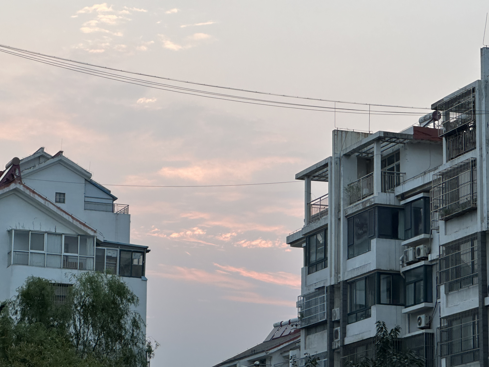
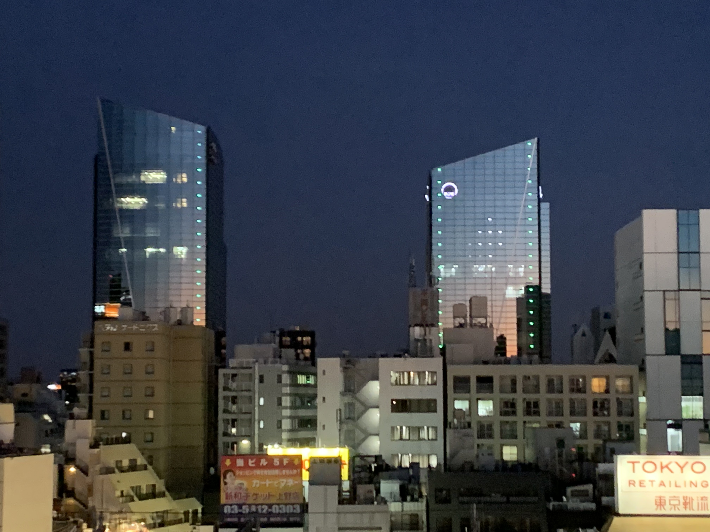

小さなメモ-人生の洞察を記録する
人生は壮大な花火であり、たとえ火の木と銀色の花の上の空であっても、私たちは同じ場所で彷徨い、留まることを望まない。 夢を追いかけ、歌を追いかける。 青春の思い出の足跡をたどる。

むかしむかし、私たちが頭上に輝く星を眺めるとき、その夜と夜の星の光はまだ私たちの心にふりそそいでいたが、乙女センチメンタルを織る牛飼いの涙はなかった。 大人になったから、もうおとぎ話は信じない。

何も知らずに片目を開け、昼間にこの豊かな世界を眺める。 隠された素晴らしさは、何もない日、満開の蜃気楼、落日の赤みを帯びた驚きです。 景色は変わっていない、若さは老いている、春と秋の老人は、再び川の上に立つだろう、どのように死者の言葉を繰り返す。
昨日と今日の物語が交互に上演される、見慣れたようで見慣れない場所の角を曲がり、私たちは明日の若者の解釈を手にし、教室と混雑した緑の野原を歩き、どれほどの期待と夢がここから船出しようとしているのだろう。 しかし、私たちを待っているのは、魅力的でカラフルな夢だけでなく、不死鳥の涅槃の苦しみでもある。
